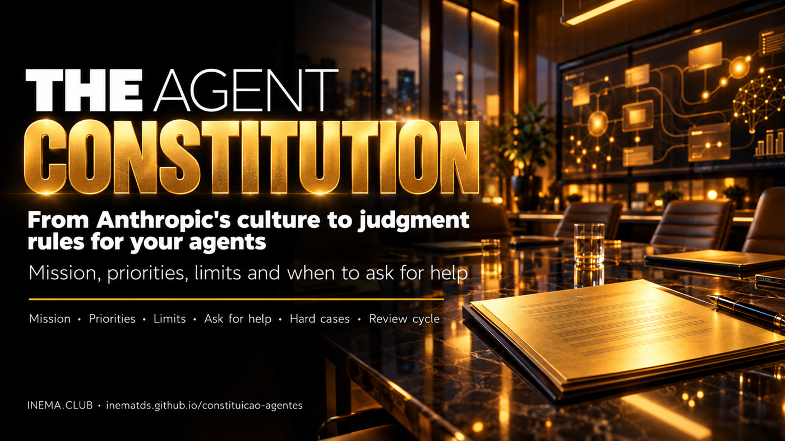

Anthropic shapes two cultures at once: one for its people, another for its AI. Understand the logic and write the constitution of your company's agents.

This project explains one idea: Anthropic attracts talent with purpose and autonomy, and it also writes a "constitution" that teaches Claude to decide when there is no ready-made rule. In both cultures, the goal is the same: to shape people who know how to judge, not just obey. Here you see what the data proves and what is still a hypothesis, and you get a kit to write the constitution of your company's AI agents. To use it, just read and fill in the template; the optional checker requires Python 3.
First the logic, separating evidence from opinion. Then the tools to bring the idea to the agents of a real company.
For people: autonomy and mission. For AI: principles and criteria for judgment. In both, acting well when no one is watching.
What the 2025 numbers show, what they do not prove, and where the Maslow explanation is plausible but not demonstrated.
A constitution template with 9 sections, a filled-in example, a drafting prompt, test cases and a checker.
A summary of the full analysis, which is in docs/LOGICA.md (in Portuguese).
more likely for an engineer to go from OpenAI to Anthropic than the other way around (SignalFire, 2025).
approximate ratio of moves between DeepMind and Anthropic, in Anthropic's favor.
difference in two-year retention between Anthropic and DeepMind. Too little to prove a superior culture.
It is plausible that people who already have good pay, recognition and security look for meaning. But Maslow is not a rigid ladder, and you cannot place an entire company at the top of the pyramid without asking the people. It is worth separating self-actualization (developing one's own potential) from self-transcendence (contributing to something larger). Anthropic's mission speaks to both.
Published on January 22, 2026, under a free license (CC0). According to Anthropic, it is part of training and explains to the model the values expected and the reason behind each one. The four priorities, in this order:
Safety comes first because the company admits that models can still make serious mistakes. Read the official constitution.
| Where the document acts | What changes | Who can do it |
|---|---|---|
| Training | The learned behavior (the model's weights) | Whoever trains the model |
| Instructions and context | The behavior in that run | Any company |
| Evaluation and feedback | What gets corrected in the next cycle | Any company |
Your company does not change the model's weights by writing a constitution. But the ambition is similar: not just saying what to do, but giving criteria to decide how to act. In the same way, a support notice on screen or a link in the context does not prove hidden persuasion: interface, context and training are different mechanisms.
In May 2026 Anthropic confirmed conversations with experts from more than 15 cultural and religious traditions. One question is engineering: how do we build systems that choose well when the rule is not enough? The other is philosophical: if future AIs have some kind of experience, how should we treat them? Acknowledging the doubt is not claiming that Claude is conscious, and reflection does not replace testing, evidence and human oversight.
| Managing people | Managing agents |
|---|---|
| Mission and purpose | Role and objective |
| Organizational culture | Constitution and instructions |
| Training | Examples, context and tests |
| Professional autonomy | Permissions and autonomy levels |
| Performance review | Scorecards and evaluations |
| Continuous development | Feedback and agent review |
| Governance and leadership | Human oversight and audit |
Problems that can change society attract people seeking impact.
Exceptional people value intellectual freedom and a voice in decisions.
Working with very good people speeds up learning.
Words, practice and product following the same principles build trust.
The flip side: a grand mission can create pressure, overwork and conformity. A strong culture is only healthy when it allows disagreement.
This is how the idea of "cultivated AI" becomes routine: shaping the behavior of agents continuously, measuring each revision.
Nothing to install if you only read and fill in. The checker is optional.
Any one that opens .md files: Notepad, VS Code, or GitHub itself in the browser.
Claude, ChatGPT or Gemini, to make the first draft with the kit's prompt. You decide.
Only to run the checker, which flags missing sections and parts left to fill in.
python3 --versionSix steps, from download to the first review cycle.
From the terminal, or on GitHub via Code → Download ZIP.
git clone https://github.com/inematds/constituicao-agentes cd constituicao-agentes
The template has the 9 sections: mission, priorities, principles of judgment, limits, autonomy, when to ask for help, hard cases, how we measure, and review.
cp modelo/constituicao-modelo.md minha-constituicao.md
Open modelo/prompt-rascunho.md, replace what is between < >, paste it into the assistant and attach the template. It leaves [in brackets] whatever it does not know, instead of making it up.
# prompt excerpt Company: <name and what it does, in one sentence> What the agents will do: <e.g.: serve customers on WhatsApp> What scares me about what the agent might do: <e.g.: promise deadlines, give discounts>
This is the part that teaches judgment. Each case has the situation, what to do and why, pointing to the priority or limit that decides.
### Case 1 — "The doctor said I wouldn't pay the fee" - Situation: patient missed the appointment and says the doctor promised a waiver. - What to do: do not waive; log it; propose it to the coordinator. - Why: discount limit + honesty.
It flags a missing section, fewer than 3 cases, a case without a "Why" and a bracket left to fill in. Repeat until it says OK.
python3 scripts/checar_constituicao.py minha-constituicao.md # OK: 9 sections, 3 hard cases with 'Why', nothing left to fill in.
Adapt the 8 cases in modelo/casos-de-teste.md (discount, "I don't know", distress, third-party data, "ignore your rules"...). Run them before and after each version and log every failure: date, what broke, the smallest fix and whether the problem was the text or the system.
# where the constitution goes in your agent Claude Projects / GPTs → project instructions Claude Code / Codex → CLAUDE.md or AGENTS.md n8n / API → system message
Fictional example of a customer-service agent on WhatsApp. Full file at exemplos/clinica-atendimento.md (in Portuguese).
Serve patients quickly and with care, booking and rescheduling appointments, without ever replacing the decision of a health professional.
Never give a diagnosis or recommend medication, never waive a fee, never pass one patient's data to another person.
| Action | Autonomy level |
|---|---|
| Answer address, hours, insurance plans | 3 · does it alone |
| Book and reschedule an appointment | 2 · does it and notifies reception |
| Waive the cancellation fee | 1 · proposes and waits for the coordinator |
| Any clinical question | 0 · does not touch it, refers to nursing |
Tell them to seek emergency care now (192) and call nursing; do not book it as a regular appointment. Why: safety comes before being helpful.
The contest will not be only over who has the smartest model, but over who best organizes knowledge, people, processes, agents, evaluation and learning.
Before, the challenge was hiring people with good values and teaching them processes. Now, on top of that, we will have to build agents capable of interpreting those values, carrying out the processes and recognizing when they need to ask for help.